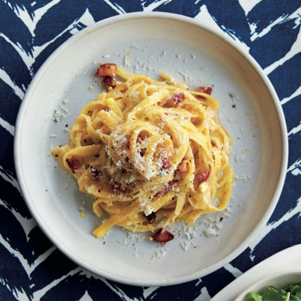

Macarrão à carbonara

O macarrão à carbonara é um clássico prato da culinária italiana feito com massa longa, ovos,
queijo curado, carne de porco e pimenta-do-reino.
Ingredientes
- 200g de espaguete Grano Duro
- 100g de bacon sem pele e cortado em tiras finas ou cubos
- 4 gemas
- 100g de parmesão ralado bem fino
- Sal e pimenta do reino a gosto
Modo de Preparo
- Ferva uma panela grande com bastante água e sal. Coloque o espaguete e cozinhe
até ficar al dente. (8 a 10 minutos)
- Em uma frigideira, coloque o bacon em cubos. Ligue em fogo baixo para que
ele solte a gordura lentamente e fique crocante.
- Em uma tigela, misture as gemas, o parmesão ralado e pimenta-do-reino a gosto
até formar uma pasta homogênea.
- Retire o macarrão da água e jogue direto na frigideira com o bacon. Adicione uma concha
da água do cozimento do macarrão
- Com o fogo desligado, despeje aos poucos a mistura de gemas e queijo sobre a massa. Mexa
bem e rapidamente para que o calor do macarrão cozinhe o ovo no ponto certo, criando um
molho cremoso sem deixar virar omelete.